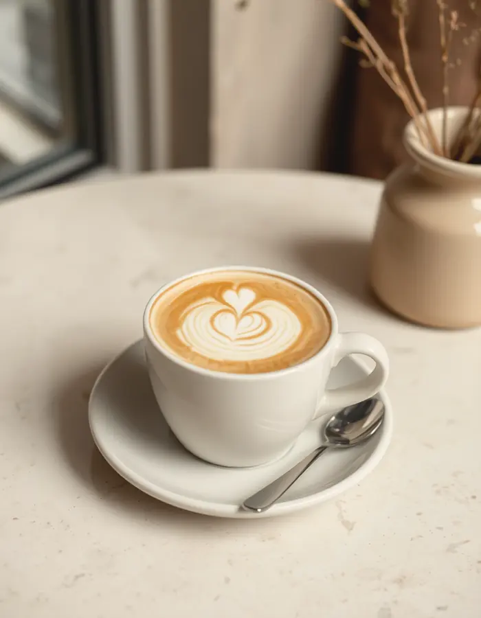
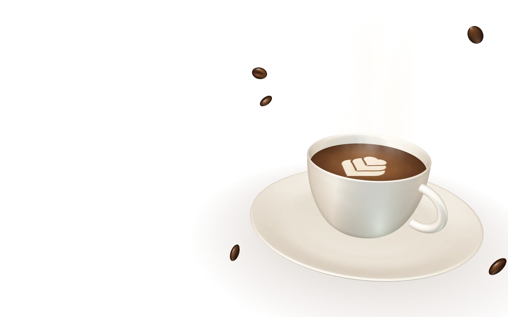
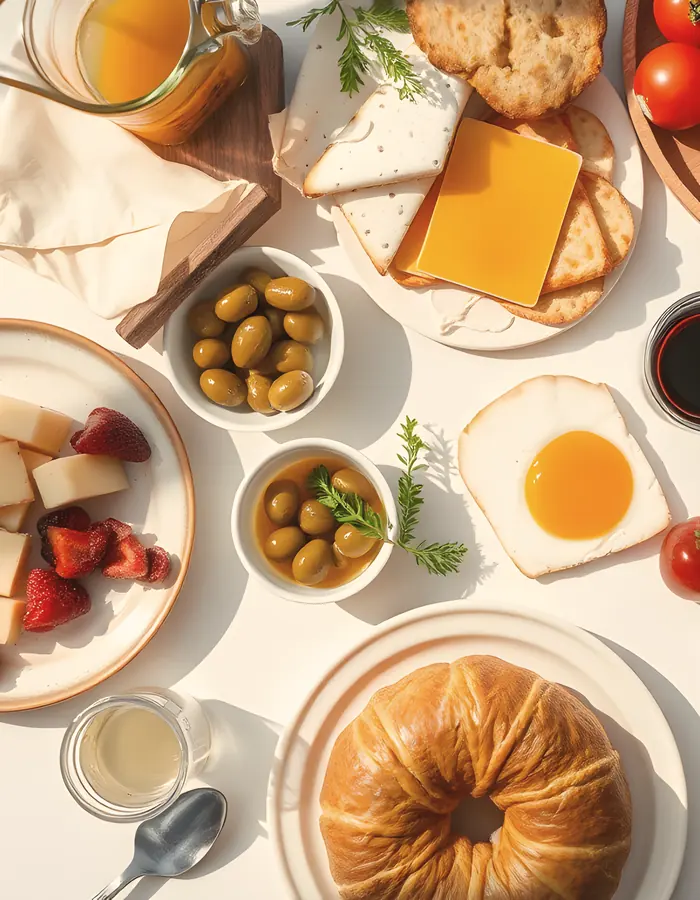
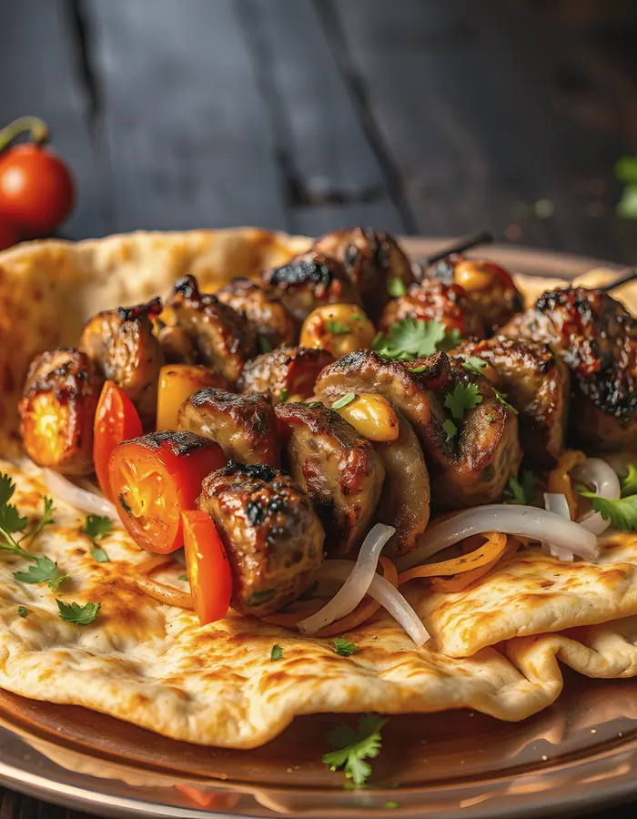
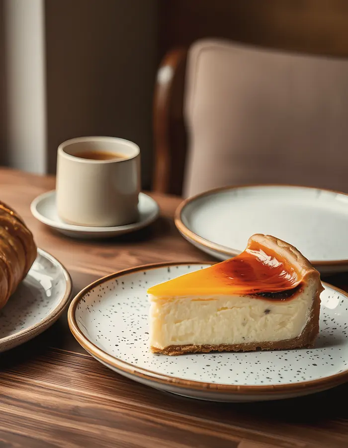
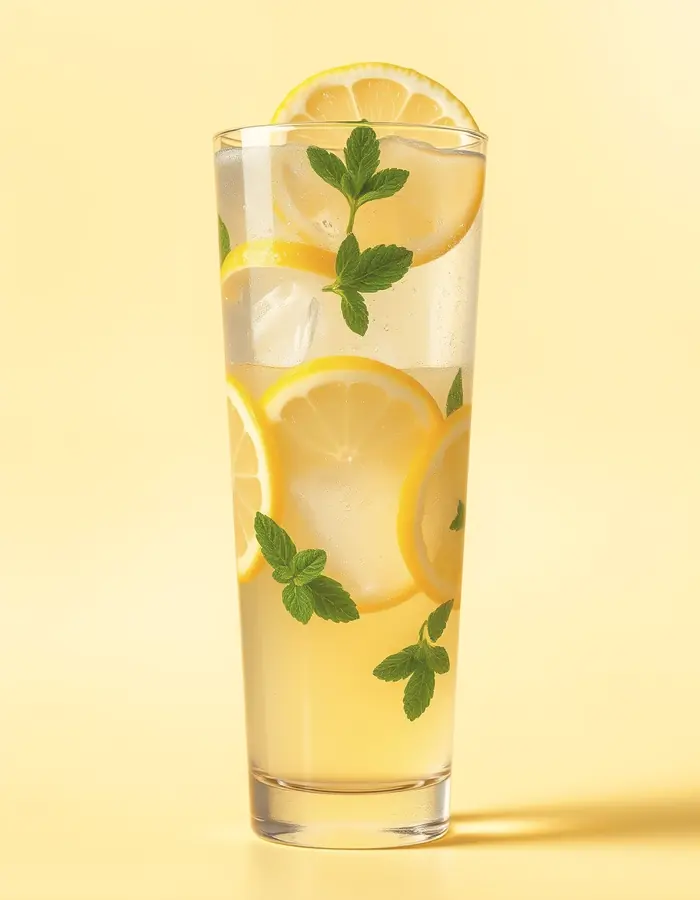
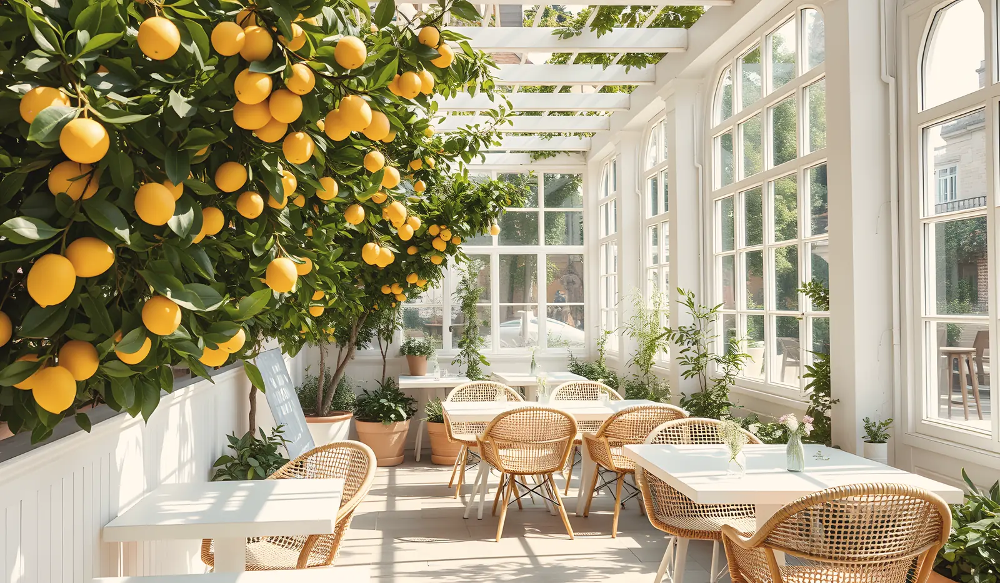
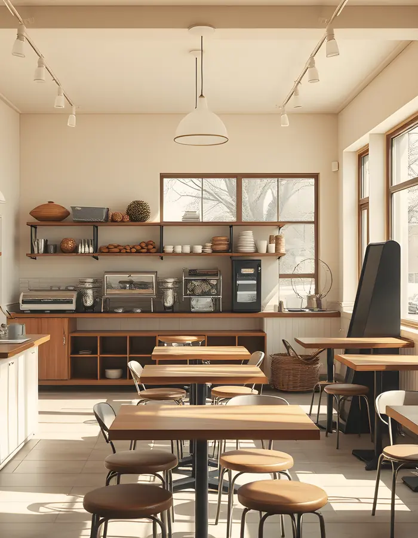
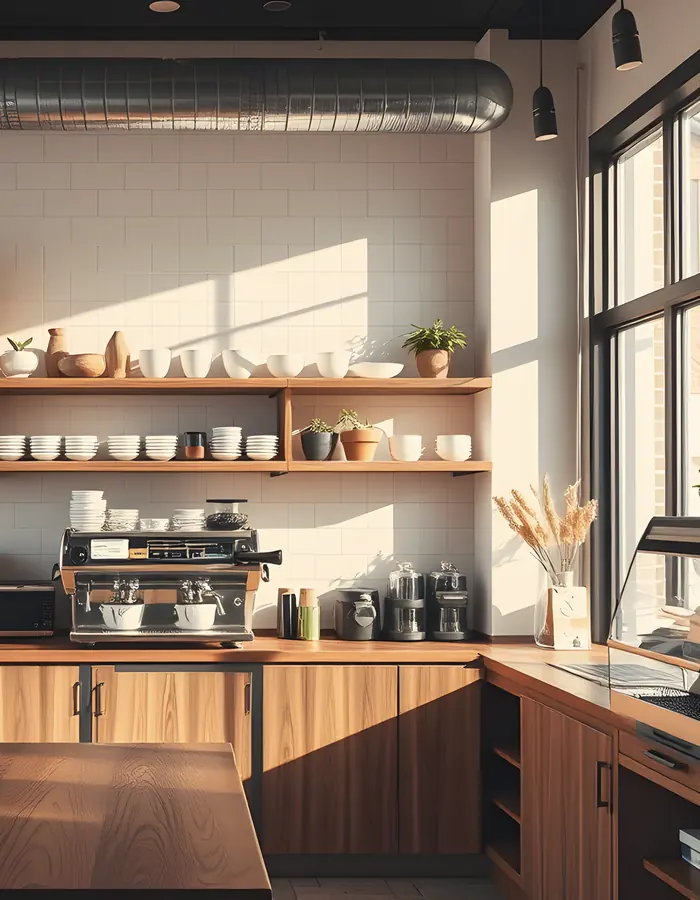

01
Travertina flat white
Haftalık kavrulan tek köken espresso, ipeksi süt.
- Süt

Denizli · Kahve & Mutfak
Pamukkale'nin beyaz taraçalarından ilham alan bir kahve ve mutfak evi. Sabah kahvesinden akşam yemeğine, yavaş ve özenli.
Hikâye
Traverten, suyun binlerce yıl boyunca sabırla bıraktığı taştır. Biz de mutfağımızı aynı sabırla kurduk: iyi çekirdek, yerel üretici, mevsiminde sebze ve her tabağa ayrılan zaman.
Mutfaktan seçkiler
Her tabağın alerjen bilgisi yanında. Tam menü ve 14 alerjen süzgeci tek dokunuş uzakta.
Alerjen bilgili menünün tamamı
Haftalık kavrulan tek köken espresso, ipeksi süt.

Yerel peynirler, çiçek balı ve kaymak, sıcak simit, demlik çay.

Meşe kömüründe kuzu, közlenmiş domates ve biber, sıcak lavaş.

Yanık yüzeyli, içi akışkan cheesecake; yanında günün kahvesi.

Günlük sıkılır, az şekerli, bol buzlu.

Günün üç hali
Mekân
Geniş pencereler, gün boyu değişen ışık, 60 kişilik salon ve dağlara bakan teras. Doğum günü, iş yemeği ya da sadece sessiz bir kahve için.


Masanızdaki QR
Gluten, süt, fındık, susam… Menüdeki her tabağın içeriği açıkça yazılı. Kaçınmak istediklerinizi seçin, menü size uygun tabakları göstersin.
Alerjen bilgili menüyü açınRezervasyon
Misafirlerimiz ne diyor?
Düzenlenmemiş, süzülmemiş: bütün yorumlar Google profilimizde.
Google yorumlarını okuyun